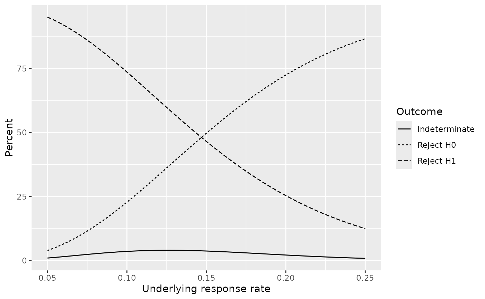
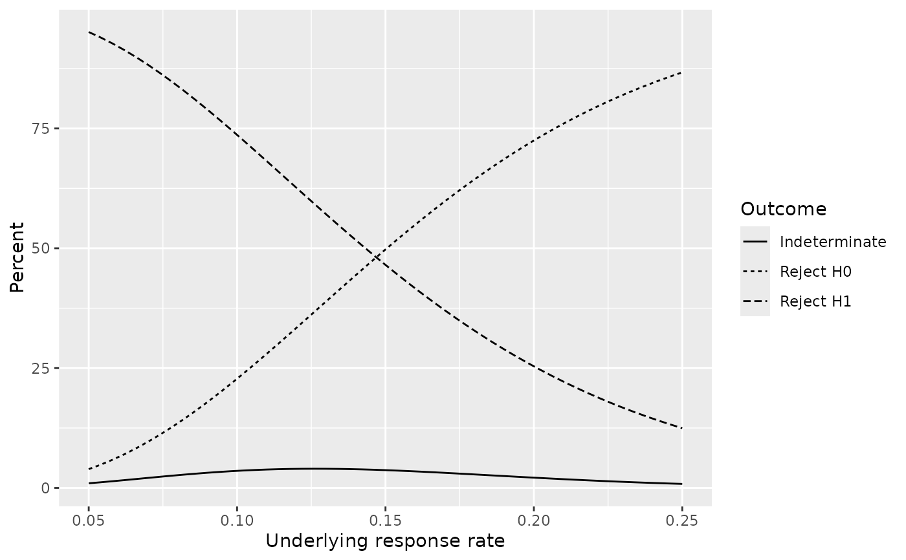

gsBinomialExact computes power/Type I error and expected sample size
for a group sequential design in a single-arm trial with a binary outcome.
This can also be used to compare event rates in two-arm studies. The print
function has been extended using print.gsBinomialExact to print
gsBinomialExact objects. Similarly, a plot function has
been extended using plot.gsBinomialExact to plot
gsBinomialExact objects.
binomialSPRT computes a truncated binomial sequential probability
ratio test (SPRT) which is a specific instance of an exact binomial group
sequential design for a single arm trial with a binary outcome.
gsBinomialPP computes a truncated binomial (group) sequential design
based on predictive probability.
nBinomial1Sample uses exact binomial calculations to compute power
and sample size for single arm binomial experiments.
gsBinomialExact is based on the book "Group Sequential Methods with
Applications to Clinical Trials," Christopher Jennison and Bruce W.
Turnbull, Chapter 12, Section 12.1.2 Exact Calculations for Binary Data.
This computation is often used as an approximation for the distribution of
the number of events in one treatment group out of all events when the
probability of an event is small and sample size is large.
An object of class gsBinomialExact is returned. On output, the values
of theta input to gsBinomialExact will be the parameter values
for which the boundary crossing probabilities and expected sample sizes are
computed.
Note that a[1] equal to -1 lower bound at n.I[1] means 0 successes continues at interim 1; a[2]==0 at interim 2 means 0 successes stops trial for futility at 2nd analysis. For final analysis, set a[k] equal to b[k]-1 to incorporate all possibilities into non-positive trial; see example.
The sequential probability ratio test (SPRT) is a sequential testing scheme
allowing testing after each observation. This likelihood ratio is used to
determine upper and lower cutoffs which are linear and parallel in the
number of responses as a function of sample size. binomialSPRT
produces a variation the the SPRT that tests only within a range of sample
sizes. While the linear SPRT bounds are continuous, actual bounds are the
integer number of response at or beyond each linear bound for each sample
size where testing is performed. Because of the truncation and
discretization of the bounds, power and Type I error achieve will be lower
than the nominal levels specified by alpha and beta which can
be altered to produce desired values that are achieved by the planned sample
size. See also example that shows computation of Type I error when futility
bound is considered non-binding.
Note that if the objective of a design is to demonstrate that a rate (e.g.,
failure rate) is lower than a certain level, two approaches can be taken.
First, 1 minus the failure rate is the success rate and this can be used for
planning. Second, the role of beta becomes to express Type I error
and alpha is used to express Type II error.
Plots produced include boundary plots, expected sample size, response rate at the boundary and power.
gsBinomial1Sample uses exact binomial computations based on the base
R functions qbinom() and pbinom(). The tabular output may be
convenient for plotting. Note that input variables are largely not checked,
so the user is largely responsible for results; it is a good idea to do a
run with outtype=3 to check that you have done things appropriately.
If n is not ordered (a bad idea) or not sequential (maybe OK), be
aware of possible consequences.
nBinomial1Sample is based on code from Marc Schwartz marc_schwartz@me.com.
The possible sample size vector n needs to be selected in such a fashion
that it covers the possible range of values that include the true minimum.
NOTE: the one-sided evaluation of significance is more conservative than using the 2-sided exact test in binom.test.
Usage
gsBinomialExact(
k = 2,
theta = c(0.1, 0.2),
n.I = c(50, 100),
a = c(3, 7),
b = c(20, 30)
)
binomialSPRT(
p0 = 0.05,
p1 = 0.25,
alpha = 0.1,
beta = 0.15,
minn = 10,
maxn = 35
)
# S3 method for class 'gsBinomialExact'
plot(x, plottype = 1, ...)
# S3 method for class 'binomialSPRT'
plot(x, plottype = 1, ...)
nBinomial1Sample(
p0 = 0.9,
p1 = 0.95,
alpha = 0.025,
beta = NULL,
n = 200:250,
outtype = 1,
conservative = FALSE
)Arguments
- k
Number of analyses planned, including interim and final.
- theta
Vector of possible underling binomial probabilities for a single binomial sample.
- n.I
Sample size at analyses (increasing positive integers); vector of length k.
- a
Number of "successes" required to cross lower bound cutoffs to reject
p1in favor ofp0at each analysis; vector of length k; -1 (minimum allowed) means no lower bound.- b
Number of "successes" required to cross upper bound cutoffs for rejecting
p0in favor ofp1at each analysis; vector of length k; value > n.I means no upper bound.- p0
Lower of the two response (event) rates hypothesized.
- p1
Higher of the two response (event) rates hypothesized.
- alpha
Nominal probability of rejecting response (event) rate
p0when it is true.- beta
Nominal probability of rejecting response (event) rate
p1when it is true. If NULL, Type II error will be computed for all input values ofnand output will be in a data frame.- minn
Minimum sample size at which sequential testing begins.
- maxn
Maximum sample size.
- x
Item of class
gsBinomialExactorbinomialSPRTforprint.gsBinomialExact. Item of classgsBinomialExactforplot.gsBinomialExact. Item of classbinomialSPRTfor item of classplot.binomialSPRT.- plottype
1 produces a plot with counts of response at bounds (for
binomialSPRT, also produces linear SPRT bounds); 2 produces a plot with power to reject null and alternate response rates as well as the probability of not crossing a bound by the maximum sample size; 3 produces a plot with the response rate at the boundary as a function of sample size when the boundary is crossed; 6 produces a plot of the expected sample size by the underlying event rate (this assumes there is no enrollment beyond the sample size where the boundary is crossed).- ...
arguments passed through to
ggplot.- n
sample sizes to be considered for
nBinomial1Sample. These should be ordered from smallest to largest and be > 0.- outtype
Operative when
beta != NULL.1means routine will return a single integer sample size while foroutput=2a data frame is returned (see Value); note that this not operative isbetaisNULLin which case a data table is returned with Type II error and power for each input value ofn.- conservative
operative when
outtype=1or2andbeta != NULL. DefaultFALSEselects minimum sample size for which power is at least1-beta. Whenconservative=TRUE, the minimum sample sample size for which power is at least1-betaand there is no larger sample size in the inputnwhere power is less than1-beta.
Value
gsBinomialExact() returns a list of class
gsBinomialExact and gsProbability (see example); when
displaying one of these objects, the default function to print is
print.gsProbability(). The object returned from
gsBinomialExact() contains the following elements:
- k
As input.
- theta
As input.
- n.I
As input.
- lower
A list containing two elements:
boundis as input inaandprobis a matrix of boundary crossing probabilities. Elementi,jcontains the boundary crossing probability at analysisifor thej-th element ofthetainput. All boundary crossing is assumed to be binding for this computation; that is, the trial must stop if a boundary is crossed.- upper
A list of the same form as
lowercontaining the upper bound and upper boundary crossing probabilities.- en
A vector of the same length as
thetacontaining expected sample sizes for the trial design corresponding to each value in the vectortheta.
binomialSPRT produces an object of class binomialSPRT that is
an extension of the gsBinomialExact class. The values returned in
addition to those returned by gsBinomialExact are:
- intercept
A vector of length 2 with the intercepts for the two SPRT bounds.
- slope
A scalar with the common slope of the SPRT bounds.
- alpha
As input. Note that this will exceed the actual Type I error achieved by the design returned.
- beta
As input. Note that this will exceed the actual Type II error achieved by the design returned.
- p0
As input.
- p1
As input.
nBinomial1Sample produces a data frame with power for each input value in n
if beta=NULL. Otherwise, a sample size achieving the desired power is returned unless
the minimum power for the values input in n is greater than or equal to the target or
the maximum yields power less than the target, in which case an error message is shown.
The input variable outtype has no effect if beta=NULL.
Otherwise, outtype=1 results in return of an integer sample size and outtype=2
results in a data frame with one record which includes the desired sample size.
When a data frame is returned, the variables include:
- p0
Input null hypothesis event (or response) rate.
- p1
Input alternative hypothesis (or response) rate; must be
> p0.- alpha
Input Type I error.
- beta
Input Type II error except when input is
NULLin which case realized Type II error is computed.- n
sample size.
- b
cutoff given
nto control Type I error; value isNULLif no such value exists.- alphaR
Type I error achieved for each output value of
n; less than or equal to the input valuealpha.- Power
Power achieved for each output value of
n.
Note
The gsDesign technical manual is available at https://keaven.github.io/gsd-tech-manual/.
References
Jennison C and Turnbull BW (2000), Group Sequential Methods with Applications to Clinical Trials. Boca Raton: Chapman and Hall.
Code for nBinomial1Sample was based on code developed by marc_schwartz@me.com.
Author
Jon Hartzel, Yevgen Tymofyeyev and Keaven Anderson keaven_anderson@merck.com
Examples
library(ggplot2)
zz <- gsBinomialExact(
k = 3, theta = seq(0.1, 0.9, 0.1), n.I = c(12, 24, 36),
a = c(-1, 0, 11), b = c(5, 9, 12)
)
# let's see what class this is
class(zz)
#> [1] "gsBinomialExact" "gsProbability"
# because of "gsProbability" class above, following is equivalent to
# \code{print.gsProbability(zz)}
zz
#> Bounds
#> Analysis N a b
#> 1 12 -1 5
#> 2 24 0 9
#> 3 36 11 12
#>
#> Boundary crossing probabilities and expected sample size assume
#> any cross stops the trial
#>
#> Upper boundary
#> Analysis
#> Theta 1 2 3 Total E{N}
#> 0.1 0.0043 0.0002 0.0001 0.0045 34.9
#> 0.2 0.0726 0.0155 0.0168 0.1048 34.0
#> 0.3 0.2763 0.0993 0.1164 0.4921 28.2
#> 0.4 0.5618 0.1782 0.1362 0.8762 20.4
#> 0.5 0.8062 0.1372 0.0463 0.9896 15.0
#> 0.6 0.9427 0.0519 0.0052 0.9998 12.8
#> 0.7 0.9905 0.0093 0.0002 1.0000 12.1
#> 0.8 0.9994 0.0006 0.0000 1.0000 12.0
#> 0.9 1.0000 0.0000 0.0000 1.0000 12.0
#>
#> Lower boundary
#> Analysis
#> Theta 1 2 3 Total
#> 0.1 0 0.0798 0.9157 0.9955
#> 0.2 0 0.0047 0.8905 0.8952
#> 0.3 0 0.0002 0.5077 0.5079
#> 0.4 0 0.0000 0.1238 0.1238
#> 0.5 0 0.0000 0.0104 0.0104
#> 0.6 0 0.0000 0.0002 0.0002
#> 0.7 0 0.0000 0.0000 0.0000
#> 0.8 0 0.0000 0.0000 0.0000
#> 0.9 0 0.0000 0.0000 0.0000
# also plot (see also plots below for \code{binomialSPRT})
# add lines using geom_line()
plot(zz) +
ggplot2::geom_line()
 # now for SPRT examples
x <- binomialSPRT(p0 = .05, p1 = .25, alpha = .1, beta = .2)
# boundary plot
plot(x)
# now for SPRT examples
x <- binomialSPRT(p0 = .05, p1 = .25, alpha = .1, beta = .2)
# boundary plot
plot(x)
 # power plot
plot(x, plottype = 2)

# Response (event) rate at boundary
plot(x, plottype = 3)
# power plot
plot(x, plottype = 2)

# Response (event) rate at boundary
plot(x, plottype = 3)
 # Expected sample size at boundary crossing or end of trial
plot(x, plottype = 6)
# Expected sample size at boundary crossing or end of trial
plot(x, plottype = 6)
 # sample size for single arm exact binomial
# plot of table of power by sample size
# note that outtype need not be specified if beta is NULL
nb1 <- nBinomial1Sample(p0 = 0.05, p1=0.2,alpha = 0.025, beta=NULL, n = 25:40)
nb1
#> p0 p1 alpha beta n b alphaR Power
#> 1 0.05 0.2 0.025 0.4206743 25 5 0.007164948 0.5793257
#> 2 0.05 0.2 0.025 0.3833381 26 5 0.008511231 0.6166619
#> 3 0.05 0.2 0.025 0.3480384 27 5 0.010022739 0.6519616
#> 4 0.05 0.2 0.025 0.3148874 28 5 0.011708399 0.6851126
#> 5 0.05 0.2 0.025 0.2839465 29 5 0.013576673 0.7160535
#> 6 0.05 0.2 0.025 0.2552333 30 5 0.015635510 0.7447667
#> 7 0.05 0.2 0.025 0.2287288 31 5 0.017892313 0.7712712
#> 8 0.05 0.2 0.025 0.2043839 32 5 0.020353899 0.7956161
#> 9 0.05 0.2 0.025 0.1821257 33 5 0.023026479 0.8178743
#> 10 0.05 0.2 0.025 0.2996488 34 6 0.006269405 0.7003512
#> 11 0.05 0.2 0.025 0.2720917 35 6 0.007251716 0.7279083
#> 12 0.05 0.2 0.025 0.2463717 36 6 0.008340444 0.7536283
#> 13 0.05 0.2 0.025 0.2224770 37 6 0.009541557 0.7775230
#> 14 0.05 0.2 0.025 0.2003744 38 6 0.010860905 0.7996256
#> 15 0.05 0.2 0.025 0.1800132 39 6 0.012304191 0.8199868
#> 16 0.05 0.2 0.025 0.1613288 40 6 0.013876949 0.8386712
library(scales)
ggplot2::ggplot(nb1, ggplot2::aes(x = n, y = Power)) +
ggplot2::geom_line() +
ggplot2::geom_point() +
ggplot2::scale_y_continuous(labels = percent)
# simple call with same parameters to get minimum sample size yielding desired power
nBinomial1Sample(p0 = 0.05, p1 = 0.2, alpha = 0.025, beta = .2, n = 25:40)
#> [1] 33
# change to 'conservative' if you want all larger sample
# sizes to also provide adequate power
nBinomial1Sample(p0 = 0.05, p1 = 0.2, alpha = 0.025, beta = .2, n = 25:40, conservative = TRUE)
#> [1] 39
# print out more information for the selected derived sample size
nBinomial1Sample(p0 = 0.05, p1 = 0.2, alpha = 0.025, beta = .2, n = 25:40, conservative = TRUE,
outtype = 2)
#> p0 p1 alpha beta n b alphaR Power
#> 1 0.05 0.2 0.025 0.2 39 6 0.01230419 0.8199868
# Reproduce realized Type I error alphaR
stats::pbinom(q = 5, size = 39, prob = .05, lower.tail = FALSE)
#> [1] 0.01230419
# Reproduce realized power
stats::pbinom(q = 5, size = 39, prob = 0.2, lower.tail = FALSE)
#> [1] 0.8199868
# Reproduce critical value for positive finding
stats::qbinom(p = 1 - .025, size = 39, prob = .05) + 1
#> [1] 6
# Compute p-value for 7 successes
stats::pbinom(q = 6, size = 39, prob = .05, lower.tail = FALSE)
#> [1] 0.002922829
# what happens if input sample sizes not sufficient?
if (FALSE) { # \dontrun{
nBinomial1Sample(p0 = 0.05, p1 = 0.2, alpha = 0.025, beta = .2, n = 25:30)
} # }
# sample size for single arm exact binomial
# plot of table of power by sample size
# note that outtype need not be specified if beta is NULL
nb1 <- nBinomial1Sample(p0 = 0.05, p1=0.2,alpha = 0.025, beta=NULL, n = 25:40)
nb1
#> p0 p1 alpha beta n b alphaR Power
#> 1 0.05 0.2 0.025 0.4206743 25 5 0.007164948 0.5793257
#> 2 0.05 0.2 0.025 0.3833381 26 5 0.008511231 0.6166619
#> 3 0.05 0.2 0.025 0.3480384 27 5 0.010022739 0.6519616
#> 4 0.05 0.2 0.025 0.3148874 28 5 0.011708399 0.6851126
#> 5 0.05 0.2 0.025 0.2839465 29 5 0.013576673 0.7160535
#> 6 0.05 0.2 0.025 0.2552333 30 5 0.015635510 0.7447667
#> 7 0.05 0.2 0.025 0.2287288 31 5 0.017892313 0.7712712
#> 8 0.05 0.2 0.025 0.2043839 32 5 0.020353899 0.7956161
#> 9 0.05 0.2 0.025 0.1821257 33 5 0.023026479 0.8178743
#> 10 0.05 0.2 0.025 0.2996488 34 6 0.006269405 0.7003512
#> 11 0.05 0.2 0.025 0.2720917 35 6 0.007251716 0.7279083
#> 12 0.05 0.2 0.025 0.2463717 36 6 0.008340444 0.7536283
#> 13 0.05 0.2 0.025 0.2224770 37 6 0.009541557 0.7775230
#> 14 0.05 0.2 0.025 0.2003744 38 6 0.010860905 0.7996256
#> 15 0.05 0.2 0.025 0.1800132 39 6 0.012304191 0.8199868
#> 16 0.05 0.2 0.025 0.1613288 40 6 0.013876949 0.8386712
library(scales)
ggplot2::ggplot(nb1, ggplot2::aes(x = n, y = Power)) +
ggplot2::geom_line() +
ggplot2::geom_point() +
ggplot2::scale_y_continuous(labels = percent)
# simple call with same parameters to get minimum sample size yielding desired power
nBinomial1Sample(p0 = 0.05, p1 = 0.2, alpha = 0.025, beta = .2, n = 25:40)
#> [1] 33
# change to 'conservative' if you want all larger sample
# sizes to also provide adequate power
nBinomial1Sample(p0 = 0.05, p1 = 0.2, alpha = 0.025, beta = .2, n = 25:40, conservative = TRUE)
#> [1] 39
# print out more information for the selected derived sample size
nBinomial1Sample(p0 = 0.05, p1 = 0.2, alpha = 0.025, beta = .2, n = 25:40, conservative = TRUE,
outtype = 2)
#> p0 p1 alpha beta n b alphaR Power
#> 1 0.05 0.2 0.025 0.2 39 6 0.01230419 0.8199868
# Reproduce realized Type I error alphaR
stats::pbinom(q = 5, size = 39, prob = .05, lower.tail = FALSE)
#> [1] 0.01230419
# Reproduce realized power
stats::pbinom(q = 5, size = 39, prob = 0.2, lower.tail = FALSE)
#> [1] 0.8199868
# Reproduce critical value for positive finding
stats::qbinom(p = 1 - .025, size = 39, prob = .05) + 1
#> [1] 6
# Compute p-value for 7 successes
stats::pbinom(q = 6, size = 39, prob = .05, lower.tail = FALSE)
#> [1] 0.002922829
# what happens if input sample sizes not sufficient?
if (FALSE) { # \dontrun{
nBinomial1Sample(p0 = 0.05, p1 = 0.2, alpha = 0.025, beta = .2, n = 25:30)
} # }